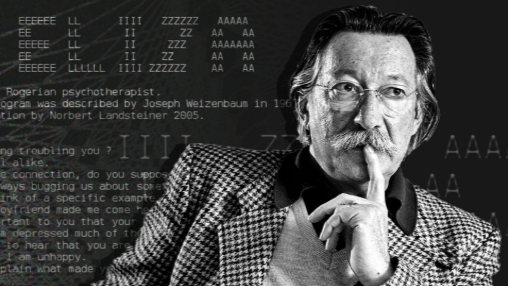

ELIZA was one of the first programs to make typed conversation feel personal.
ELIZA က လူနဲ့စာရိုက်ပြီး စကားပြောသလို ခံစားစေခဲ့တဲ့ အစောဆုံး program တွေထဲက တစ်ခုပါ။
The chatbot before chatbots: simple rules, a green screen, and a strange feeling of being understood. Chatbot တွေ မပေါ်ခင်က chatbot - rule-based စကားပြောစနစ်ကို လက်တွေ့စမ်းနိုင်တဲ့ demo ပါ။

ELIZA was one of the first programs to make typed conversation feel personal.
ELIZA က လူနဲ့စာရိုက်ပြီး စကားပြောသလို ခံစားစေခဲ့တဲ့ အစောဆုံး program တွေထဲက တစ်ခုပါ။
It used keywords, templates, and pronoun reflection instead of real understanding.
နားလည်တာမဟုတ်ဘဲ keyword, template, pronoun reflection နည်းနဲ့ ပြန်ဖြေပါတယ်။
Its "ELIZA effect" became a foundation story for ChatGPT and conversational AI.
ဒီ "ELIZA effect" က ChatGPT နဲ့ modern chatbot တွေရဲ့ အရေးကြီးတဲ့ သမိုင်းစတင်ချက်ပါ။
.png)
Choose English or Burmese and watch the rule trace show how each reply is built.
English သို့မဟုတ် မြန်မာ demo ကိုဖွင့်ပြီး reply တစ်ကြောင်းချင်းစီကို rule trace နဲ့ ကြည့်နိုင်ပါတယ်။